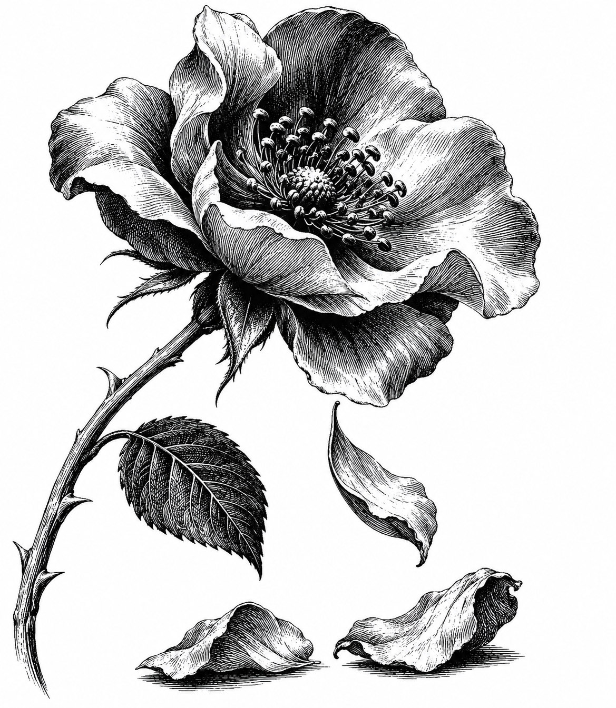

જોવાનો ઉત્સવ

આ સંસારમાં કોઈ ખોટું નથી —
ભૂલ ત્યારે થઈ જ્યારે
જોવાનું ભૂલ્યા ને ઠેરવવાનું શીખ્યા.
ફૂલ ખીલ્યું — કહ્યું 'ક્ષણિક છે',
ન જોયું કે ખૂબ ખીલ્યું.
ફૂલ ઝર્યું — કહ્યું 'ખોવાઈ ગયું',
ન જોયું કે ખૂબ ઝર્યું.
ભૂખ્યો ભિખારી — કહ્યું 'ભાગ્યહીન',
ન જોઈ ભૂખ.
સોનાની થાળ પકડેલો — કહ્યું 'ધન્ય',
ન જોઈ ભૂખ.
ઓઢણ જ જુદી — ભૂખ એક!
સત્ય ક્યાંય છુપાયેલું નથી,
ચારે કોર ઊઘડ્યું જ છે —
કહેવાની ટેવ ઓગળે ત્યારે
જોવાનો ઉત્સવ ઊઘડે,
એ ઉત્સવ એટલે જ નય-ચક્ષુ.